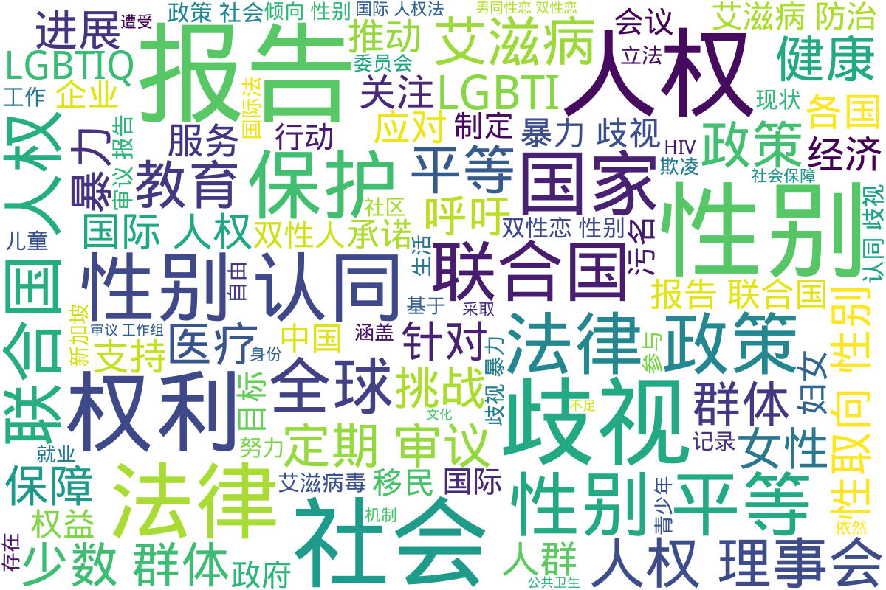

联合国
Info
本目录收录了与联合国相关的官方文件，旨在提供跨性别人士在全球范围内受到的法律保护和人权关注的资讯。这些文件将有助于了解各国在跨性别相关议题上的政策和承诺。
📊 统计信息
总计内容：71 篇
标签：跨性别 联合国 法律政策 人权 政府文件
📄 文档
| 标题 ▲ | 年份 ▼ | 摘要 |
|---|---|---|
| 2013年联合国人权事务高级专员报告-生而自由一律平等 | 2013 | 展开
本文件为2013年联合国人权事务高级专员办公室发布的报告，标题为《生而自由，一律平等：国际人权法中的性取向和性别认同》。该报告重点强调，各国在保护女同性恋者、男同性恋者、双性恋者和变性人权利方面的义务，分析了基于性取向和性别认同的暴力及歧视问题。报告指出，尽管国际人权法对所有人的权利进行了保障，但很多国家仍然对性少数群体存在严重的歧视和暴力行为。这些问题包括仇恨犯罪、酷刑、歧视性法律、不人道对待等，尤其是在拘留场所中，各种形式的虐待和不公正对待普遍存在。报告提出了国家必须履行的五项核心法律义务：保护免遭仇恨暴力，预防酷刑，废除将同性恋去罪化，禁止基于性取向和性别认同的歧视，以及维护言论自由和集会自由。通过这些建议，报告旨在促进全球对性少数群体权利的关注和行动。
年份：2013 收录日期：2024-11-23 06:17:15 |
| 2014年圭亚那普遍定期审议报告 | 2014 | 展开
该文件是关于圭亚那在2014年10月24日递交的普遍定期审议报告的概要，主要从人权的角度对该国的法律、政策及实施情况进行评估，尤其关注性取向和性别认同方面的歧视问题。报告中提到圭亚那法律中的一些歧视性条款以及来自政府和社会的偏见如何影响了女同性恋者、男同性恋者、双性恋者和变性人的生命及基本人权。文件强调，尽管圭亚那在国际人权义务方面做出了一些承诺，但仍存在大量的执行问题，例如警察对与性取向相关的仇恨犯罪的漠视和不作为，以及社会文化对多元性别人士的普遍歧视。报告还涉及到健康权、教育权、家庭生活权等多个方面，指出这些领域中的不足和改进的必要性。
年份：2014 收录日期：2024-11-23 05:11:15 |
| 2015年联合国人权理事会蒙古普遍定期审议报告 | 2015 | 展开
该报告为2015年联合国人权理事会蒙古普遍定期审议工作组提交的材料概述，反映了蒙古在国际人权义务履行方面的现状。报告中指出，尽管蒙古通过了《性别平等法》并实施了一些立法和司法改革，但政府未能有效保护性别多样性和其他少数群体的权益，特别是在反歧视立法方面的缺失。报告提到，缺乏全面的反歧视法以及对基于性别、性取向和性别认同的歧视问题的法律保护，使得男女同性恋、双性恋和跨性别者面临严重的社会和法律挑战。蒙古国家人权委员会对政府在保障人权方面的执行力表示担忧，特别是在家庭暴力、酷刑和人权维护者的保护方面。该文件呼吁蒙古政府改进法律框架并增强公众对人权及反歧视法的认识，确保所有人平等保护其人权和自由。
年份：2015 收录日期：2024-11-23 05:12:32 |
| 2016年联合国人权理事会新加坡普遍定期审议报告 | 2015 | 展开
该文件为2016年联合国人权理事会针对新加坡的普遍定期审议报告，内容涉及新加坡人权状况及相关问题的概述。报告总结了来自22个利益相关方的信息，探讨了新加坡在履行国际人权义务方面的表现。文中提到新加坡未能批准多个国际人权公约，尤其是在性取向歧视法律、死刑制度、对移民和外籍工人的基本权利保障等方面存在问题。报告中指出新加坡的特定法律可能导致性别和同性恋群体的歧视，以及对外籍劳工和女性的权益保障不足。报告还提出了对新加坡应加强人权保护的建议，包括推动平等和不歧视的法律框架，审查与惩罚措施相关的法律，以及确保外籍工人和LGBTI群体的权益得以保障。
年份：2015 收录日期：2024-11-23 05:13:03 |
| 2016年联合国人权理事会特立尼达和多巴哥普遍定期审议报告 | 2016 | 展开
该文档是2016年联合国人权理事会对特立尼达和多巴哥进行普遍定期审议的报告。报告汇总了有关该国在促进和保护人权方面的情况，包括国际人权义务、宪法和法律框架、性别平等和消除歧视的相关政策以及国家人权机构的设立状况。文中提到，特立尼达和多巴哥在过去的一轮审议中尚未批准某些国际人权文书，该国的性别政策草案长达15年未能通过，从而影响了针对性别歧视和暴力的法律实施。报告指出，特立尼达和多巴哥存在广泛的家庭暴力和性别暴力问题，并提出了可能的改进建议，例如加强公共教育、法律改革以及制定更全面的性别政策。文中还关注了对变性人群体的法律保护不足以及对受害者支持服务的缺乏等问题。
年份：2016 收录日期：2024-11-23 05:13:38 |
| 2016年联合国艾滋病问题高级别会议正式记录 | 2016 | 展开
本文件为2016年联合国艾滋病问题高级别会议的正式记录，涵盖了大会于2016年6月8日的讨论内容，主要涉及艾滋病的防治、政策承诺、国际合作及改善各国艾滋病防治现状等议题。发言者包括来自不同国家的代表，他们分享了各自国家在艾滋病防治上的进展、挑战与未来规划。例如，加纳的副总统讨论了国家对艾滋病防治的努力，如制定新策略以确保全民接受治疗，并力求达到"90-90-90"目标；科特迪瓦和海地的代表则关注国家在艾滋病防治工作中所面临的人权问题，强调需要保障艾滋病毒感染者的权益。同时，非洲国家集团也重申了共同抵抗疫情的决心，提出在社会各层面需要更积极的政策支持，以有效应对疫情的挑战。会议中还涉及到促进性别平等、针对弱势群体的保护措施以及提供可负担得起的药物等问题，反映了国际社会对促进公共健康和人权保障的重视。整体来看，该文件记录了一个全球范围内对于艾滋病防治的团结呼吁，显示出各国对共同消除这一流行病的强烈承诺和行动计划。
年份：2016 收录日期：2024-11-23 03:34:39 |
| 2017全球教育监测报告-教育问责：履行我们的承诺 | 2017 | 展开
《2017全球教育监测报告》是联合国教科文组织发布的关于教育问责的重要文件。这份报告详细阐述了全球各国在教育领域实现可持续发展目标（SDG 4）方面的努力及其成效。其核心主题为教育问责，强调教育是各社会成员的共同责任，并探讨了有效的问责机制应如何在不同层面得到落实。报告指出，尽管全球教育机会在增加，但仍有数亿儿童失学，特别是边缘群体受影响最大，因此，必须加大对其需求的重视。报告还分析了教育体系中的问责试点，强调政府、学校、教师、学生、父母、国际组织及其他行为者在提升教育质量和平等性方面的责任。综上所述，此报告不仅提供了丰富的统计数据，还提出了改善教育系统的建议与思考，是相关政策制定者和教育工作者的重要参考文献。
年份：2017 收录日期：2024-11-23 05:52:42 |
| 2017年俄罗斯联邦经济社会权利委员会第六次报告结论性意见 | 2017 | 展开
本文件为《2017年俄罗斯联邦经济社会权利委员会第六次报告结论性意见》，涵盖了对俄罗斯联邦在经济、社会及文化权利方面的报告审议。文件中详细记录了委员会对该国在促进和保护经济、社会及文化权利方面的积极方面，以及需要关注的问题和建议。委员会欢迎俄罗斯批准的几个相关国际文书，并对所采取的法规与政策表示肯定，但同时也指出实施中的不足，如对法律的应用情况较少、非政府组织活动受限、土著人民权利面临威胁等。文件列举了涉及儿童、残疾及性别平等等方面的现状与建议，强调消除基于性取向和性别认同的歧视，要求缔约国加强立法及完善陈旧的法律条款，以保证人人平等享有《公约》权利。
年份：2017 收录日期：2024-11-23 03:30:52 |
| 2017年南非人权理事会普遍定期审议报告 | 2017 | 展开
该文件是联合国人权理事会对南非在人权和基本自由方面的评审报告。报告详细介绍了自南非民主化以来，政府在实现人人享有人权和基本自由的道路上所做的努力与进展。报告指出，自1994年实施民主制度以来，南非致力于解决社会不平等、贫困和失业等问题，以实现社会凝聚力和民族认同。文件也详细描述了政府在各个领域采取的法律、政策和措施，包括宪法的保障及实施情况、对男女平等、对LGBTI群体的保护、教育与社会保障制度的发展等。报告指出，南非在医疗、教育、住房、经济增长和社会保障等方面取得了显著进展，尤其是在减少艾滋病毒和艾滋病的传播方面，政府采取了许多有效的干预措施。综上，该报告显示了南非在促进和保护人权方面的重要举措和挑战，强调了国家对实现人权的坚定承诺。
年份：2017 收录日期：2024-11-23 05:14:07 |
| 2017年联合国人权理事会第三十六届会议增编报告 | 2017 | 展开
《2017年联合国人权理事会第三十六届会议增编报告》是一份由联合国人权理事会发布的官方文件。该报告记录了突尼斯对在会议期间提出的各种建议和结论的响应。这些建议与人权相关，特别涉及对移民、性别少数群体（包括同性恋者、双性恋者、变性者及酷儿）及社会不平等现象的关注和改善。文件中明确提到，突尼斯政府接受了一系列关于促进人权的建议，包括保护性别少数群体免受歧视和暴力的措施，以及制定公众意识方案以应对污名化问题。报告还提到了加强对移民的识别和援助机制的必要性，特别是针对未成年人和有孩子的家庭。整体上，该报告为推动性别平等与人权的发展提供了重要的政策基础和行动框架。
年份：2017 收录日期：2024-11-23 05:15:18 |
| 2019_年社会概览_OECD经合组织社会指标 | 2019 | 展开
《2019年社会概览》是经合组织（OECD）发布的一份关于社会指标的文件，提供了对性向与性别少数群体（LGBT）的概述和分析。这份概览强调了LGBT群体在经合组织国家中仍遭受广泛的歧视与排斥，尽管社会接受度在逐步改善。报告中指出，在14个经合组织国家中，女同性恋者、男同性恋者和双性恋者的未确认人数近1700万，然而由于缺乏对跨性别者的明确数据，这一数字或许是更大的。该报告同时显示，尽管LGBT人士的心理健康水平普遍较低，且在就业市场中遭遇不利待遇，但对这些群体的包容性政策的重要性在于改善社会对他们的态度，并指出了法律及教育在推进社会包容性方面所必需的作用。本报告详细讨论了各种影响LGBT群体生活的因素，包括社会经济状况、法律政策和公共态度，为加深对这方面研究提供了重要的统计与分析数据。
年份：2019 收录日期：2024-11-02 02:43:41 |
| 2022_世界艾滋病大会强调科学创新与合作吉利德为终结HIV_全球 | 2022 | 展开
本文件为2022年世界艾滋病大会期间发布的新闻稿，强调了吉利德科学在应对全球HIV流行方面的积极角色与科学创新。文件中提到吉利德将在大会中分享其在HIV治疗、预防及治愈方面的最新研究成果，并细述了多项HIV临床研发的数据和项目。这些研究旨在推动医疗技术的进步，改善HIV相关人群的健康状况，同时也强调了与全球HIV社区的合作以及推动健康平等的重要性。文中提到COVID-19对HIV流行的影响，并列出了吉利德在会议中要展示的几项重要研究结果，以及针对高风险社区的参与度提升工作。
年份：2022 收录日期：2024-11-01 08:48:20 |
| 2023_联合国_LGBTI企业行为准则 | 2023 | 展开
本文件为《联合国LGBTI企业行为准则》的PDF文档，旨在帮助企业解决对女同性恋、男同性恋、双性恋、跨性别以及间性（LGBTI）人群的歧视问题。文件中提到，企业不仅需要履行其人权责任，还需积极推动社会变革。联合国人权办公室在响应的基础上制定了五项行为准则，内容包括：尊重人权、消除歧视、提供支持、避免人权侵犯及在公共领域行动。这些准则为企业提供了一系列具体措施，以在工作场所及其生活的社区中促进平等与尊重。文件指出，尽管过去十年中全球LGBTI人群的生存环境有所改善，但仍有不少地区的法律和社会条件不见得向好，特定国家的人权状况依然令人担忧。联合国借此呼吁企业认识到，在促进多元文化和反歧视方面的责任与机会，强调了企业在提高内部包容性和推动文化变革中应扮演的角色。
年份：2023 收录日期：2024-11-23 06:17:54 |
| lost-in-transition_Transgender_People,__Rights_and_HIV_Vulnerability__in_the_Asia-Pacific_Region | 2012 | 展开
本文件名为《转型失落：亚太地区跨性别者、权利与HIV脆弱性》，由联合国开发计划署（UNDP）发布，旨在提供关于亚太地区跨性别者与HIV之间关系的研究和策略性信息框架。文中讨论了跨性别者在社会中面临的各种歧视与边缘化，包括法律保护缺失、就业和医疗领域中的偏见，以及精神健康问题。文件还强调了针对跨性别者的暴力事件，以及这些事件如何违反国际法。报告的目的在于指导各国政府、民间社会及其他相关利益方，以减少跨性别者面对的极度脆弱性，并保护其权利。
年份：2012 收录日期：2025-01-10 |
| PDF_20112015_年世界卫生组织艾滋病毒战略草案 | 2011 | 展开
这份文件是《2011－2015 年世界卫生组织（WHO）全球卫生部门艾滋病毒战略草案》的正式报告，旨在指导全球范围内的艾滋病毒应对。文件详细阐述了卫生部门在艾滋病毒预防、诊断、治疗和关怀方面的重要性和具体目标，尤其是强调了为脆弱和高风险人群提供综合服务的重要性。报告还指出了卫生部门与其他关键卫生领域（如结核病、性与生殖健康等）之间的联系，以及在资源有限的情况下如何优化艾滋病毒相关服务的有效性。具体战略包括了优化医疗服务、推动人权和性别平等、以及提供结构性支持，以消除影响艾滋病毒服务获取的障碍。文件还附带附件包括经过修订的战略草案和执行摘要。整体上，本文件不仅关注于具体的医疗干预，也是试图应对广泛的社会和经济因素，确保艾滋病毒/艾滋病干预措施的普遍可及性，并努力实现与卫生相关的千年发展目标。
年份：2011 收录日期：2024-11-07 18:55:00 |
| PDF_BEING_LGBT_IN_ASIA_CHINA_COUNTRY_REPORT_-_亚洲同志项目 | 2014 | 展开
本文件为联合国开发计划署（UNDP）和美国国际发展署（USAID）联合发布的《亚洲同志项目：中国国别报告》。该报告详细记录了中国LGBT（女同性恋、男同性恋、双性恋和跨性别者）社区的法律与社会环境。报告的内容基于2013年8月在北京举行的社区对话和11月的跨性别者圆桌会议，对LGBT人群在健康、教育、家庭、媒体、就业和法律等方面的权利进行了深入讨论，并提供了关于中国法律、政策和社会文化态度对LGBT人群影响的全面回顾。文件指出，在社会和法律上，LGBT群体仍面临歧视、暴力以及缺乏法律保护的问题，许多组织呼吁对同性伴侣的权利予以承认和保护。报告提到，跨性别者面临着更为复杂的歧视和法律障碍，这些问题都亟待在未来行动中得到解决。整体而言，这是一份具有重要意义的文献，对了解中国LGBT权利现状和推进相关权益具有指导价值。
年份：2014 收录日期：2024-11-07 19:59:10 |
| PDF_LGBTI_包容指数拟议指标 | 2018 | 展开
本文件《LGBTI包容指数拟议指标》提供了有关如何制定全球范围内的LGBTI（女同性恋、男同性恋、双性恋、跨性别者和间性人）包容性指标的详细信息。文件指出，LGBTI群体常常面临歧视和暴力，因此，创建有效的包容指数是确保其权益的重要步骤。文件内容包括了LGBTI包容指数的起源、目的和方法论，以及构建该指数所需的各类指标。这些指标涵盖了健康、教育、经济福祉及人身安全等不同领域，通过这些维度来全面衡量各国在LGBTI包容性方面的表现。文件中还讨论了指标的可行性与实施方法，以及在各国法律和文化背景下需要考虑的数据质量和隐私保护问题。它强调了与利益相关者的多次磋商过程，并附上了拟议指标的详细列表，便于未来的数据收集和政策制定。
年份：2018 收录日期：2024-11-07 19:59:33 |
| PDF_中国_联合国特别程序与LGBTI_事务目录 | 2018 | 展开
本文件为《PDF_中国_联合国特别程序与LGBTI事务目录》，旨在汇总和突出联合国特别程序中关于LGBTI（女同性恋者、男同性恋者、双性恋者、跨性别者与双性人）的工作和报告。文件中包含了2011年1月至2018年11月间的所有相关主题报告和国家访问报告，以及专家们对LGBTI人士及其相关事务的参考资讯与建议。该文档涉及多个方面，包括基于性取向和性别认同的暴力与歧视、健康权、见解和言论自由、教育权、文化权等，这些都是跨性别者面临的重要问题。文件特别强调了针对LGBTQ人群的多重歧视现象以及各国在应对这些问题时的挑战与努力。它还包括了对报告中提及的关键个人和团体的关注，探讨了国际人权法中LGBTI人群的待遇及其面临的法律和社会环境。
年份：2018 收录日期：2024-11-07 19:11:25 |
| PDF_促进LGBTI人权和包容_议员手册 | 2017 | 展开
本文件为《促进LGBTI人权和包容：议员手册》，由联合国开发计划署（UNDP）和全球议员行动联盟（PGA）联合编制。手册针对现存的LGBTI（女同性恋、男同性恋、双性恋、跨性别者和间性人）人权侵害情况进行了详细分析，旨在为全球立法者提供推动LGBTI人权和包容的有效工具与策略。手册包括了国际人权框架、LGBTI权利的法律承认、处理恐同和恐跨的问题、LGBTI个体的社会经济权利，以及立法、监督、议会工作等方面的具体行动建议。还讨论了如何有效地与民间社会合作，促进LGBTI的人权、减少歧视的举措及相关法律改革的重要性。可持续发展目标背景下，该手册呼吁立法者关注各类为社会边缘群体设防的法律问题，并提供实用的建议和成功的案例，以激励更多议员的参与与行动。
年份：2017 收录日期：2024-11-07 19:58:45 |
| PDF_农村和城市活动家改变__女性__生活 | None | 展开
该文件为联合国副秘书长兼联合国妇女署执行主任普姆齐莱·姆兰博－恩格库卡在国际妇女节上发表的讲话，主题围绕女性活动家如何改变生活。讲话强调了全球妇女运动的进展及重要性，指出代代女性活动家的奉献和努力，促进了女性权利和性别平等的提升。文件中提到，健康的社会需要多元的声音，缺乏多样性会导致结构性缺陷，并且强调了参与#MeToo运动的人的重要性。这篇讲话还赞扬了为性别平权而努力的活动家，包括那些为跨性别者和双性者争取权利的倡导者。特别提到的活动家如阿斯玛·贾哈格日和亚哈·杜库仁等，通过声音与行动激励了更多人参与平权斗争。讲话中呼吁呼吁要结束对女性的暴力和不平等现象，强调男女必须共同努力去实现性别平等，这一点在当今社会尤为重要。
年份：None 收录日期：2024-11-07 20:01:45 |
| PDF_双性INTERSEX_-_ohchr_概况介绍_联合国 | None | 展开
本文件为联合国人权高专办发布的关于双性（间性）个体的概况介绍，详细探讨了双性人在生理性别特征、性取向及性别认同等方面的问题。文件指出，双性人是指生来具备的生理特征在男性与女性之间存在差异，无法完全归入任一传统二元性别的个体。该文件呼吁各国遵守人权标准，强调禁止对双性人实施医学上不必要的手术，保护其身体完整性与自主权。文件还提到，双性儿童常受到歧视与误解，易遭受剥削与虐待，很多儿童在未能知情的情况下被迫接受手术。文件中指出，双性状态与性取向及性别认同并无直接关系，且双性人可能在成长过程中经历巨大的身体和心理痛苦。
年份：None 收录日期：2024-11-07 19:52:47 |
| PDF_双性INTERSEX_联合国 | None | 展开
该文件为联合国关于双性（INTERSEX）人群的权利和生存现状的报告。内容详细介绍了双性的定义，包括双性的生理特征与社会认同之间的差异。在某些情况下，双性特征在出生时明显，而在其他情况下则表现不明显，往往在青春期时显现。报告指出，双性人常常面临由社会压力和医疗干预带来的身体完整性权利的侵犯，比如受到不必要手术的影响，这些手术通常没有经过充分的知情同意，且可能导致长期的身体和心理痛苦。文件还讨论了双性人可能遭受的歧视和虐待，并强调各国应制定法律以保护双性人的权利，反对任何形式的歧视。报告提到的法律进展包括2013年澳大利亚的《性歧视修正案》和2015年马耳他的《性别认同、性别表达和性特征法》，这两部法律都为双性人群的权利提供了法律保护。最后，文件强调了包容和尊重双性人权利的重要性，并呼吁社会提供更好的支持与理解。
年份：None 收录日期：2024-11-07 20:00:38 |
| PDF_国际不再恐同日_联合国教科文组织新闻稿 | 2012 | 展开
该文件为联合国教科文组织关于“国际不再恐同日”的新闻稿，日期为2012年5月17日。新闻稿指出，联合国教科文组织与联合国艾滋病规划署与中国的LGBT朋友一同庆祝社会的多元化，并共同反对歧视和暴力。在过去几年里，庆祝“国际不再恐同日”的活动在中国不断增加，显示出LGBT群体越来越自信，且中国社会也逐渐变得开放和宽容。
然而，尽管社会态度有了改善，LGBT人士依然面临着因为性别身份和性倾向所导致的歧视和暴力。新闻稿强调了2012年活动的主题，即“通过教育来抗击教育体系内的恐同现象”。文件中提到根据一项调查，77%的LGBT学生遭受过基于性倾向和性别身份的欺凌。联合国秘书长也对这种由恐同引发的欺凌现象发表了严厉批评，并强调了对抗暴力和歧视的必要性。
新闻稿总结了联合国教科文组织在2011年召开关于教育欺凌现象的国际咨询会的成果，呼吁全系统应对策略以遏制教育体系内的恐同和欺凌。最后，文件中传达了对中国LGBT社群成长和发出争取权利呼声的欣慰，并提到共同努力实现“零感染、零歧视、零死亡”目标的重要性。
年份：2012 收录日期：2024-11-07 18:44:25 |
| PDF_平等和不歧视_自由和平等_联合国 | None | 展开
这份文件为联合国关于性别平等和反歧视的报告，详细讨论了国际人权法中平等与不歧视的核心原则，强调每个人都应享有法律前的平等对待。文件中提到，许多国家已经在法律框架内加强了对男女同性恋、双性恋及变性者的人权保护，其中包括禁止基于性取向和性别认同的歧视。文件警告了全球范围内，特别是在某些国家，变性者和双性人仍面临法律上的极端歧视和人权侵害，包括遭受逮捕、监禁甚至死刑的风险。文件还提出国家的责任，要求各国确保法律政策不歧视任何人，并强调法律框架需提供充分的保护。而这些责任超越了文化、传统和宗教的限制，所有国家必须保障其公民的基本人权。最后，文中建议采取各种措施推进反歧视法律，包括使自愿的成人同性关系非刑罪化，以及通过国家行动计划在社会各部门执行反歧视立法。
年份：None 收录日期：2024-11-07 20:00:19 |
| PDF_情况介绍平等和不歧视_-_ohchr | None | 展开
该文件是关于平等和不歧视的情况介绍，强调了国际人权法的核心原则——每个人都应享有平等的权利。文件详细讨论了在世界范围内，尤其是在东欧和非洲地区，针对性取向和性别认同的歧视现象。文中指出，许多国家的法律和政策反映了直接和间接对男女同性恋、双性恋、变性者及双性人群体的歧视，诸如禁止公开宣传同性恋的法律以及社会对这些群体的普遍偏见和歧视。文件还强调国家在保护人权方面的法律义务，指明国家必须确保其法律和政策不基于性取向和性别认同对任何人进行歧视，保护所有人的权利。该文也提到了一些国家在这方面取得的进展，例如通过新的反歧视法律和政策，促进同性关系的合法化及变性者更容易获得法律上的性别确认。
年份：None 收录日期：2024-11-07 19:53:05 |
| PDF_男同性恋双性恋跨性别者和双性人的暴力和歧视 | 2015 | 展开
该文件是联合国发布的一份重要声明，旨在呼吁各国政府采取措施，终止对女同性恋、男同性恋、双性恋、跨性别者和双性人（统称LGBTI）群体的暴力和歧视。文件中详细阐述了国际人权法对各国的要求，强调每个人都有权利生活在一个免受暴力和歧视的环境中。联合国表示，尽管一些国家在保护LGBTI群体权利方面取得了一定进展，但全球范围内仍有数百万LGBTI人士面临普遍的人权侵犯。
文件指出，所有国家应采取紧急措施保护LGBTI人士免遭暴力与歧视，并提出了一系列具体措施，包括调查与惩处针对LGBTI人士的暴力行为、废除歧视性法律、确保法律对跨性别者性别认同的承认，以及与社区合作来消除对LGBTI人士的偏见。声明还表明，联合国愿意支持和协助各国解决这些问题，并通过教育和培训倡导尊重和促进LGBTI人士的人权。
年份：2015 收录日期：2024-11-07 19:59:59 |
| PDF_经济及社会理事会_美利坚合众国2000年至2013年在关于农村妇女的千年发展目标方面的_进展 | 2013 | 展开
这份文件是由联合国经济及社会理事会于2013年提交的，内容涉及美国在2000年至2013年期间实现农村妇女千年发展目标的进展。文件指出，尽管美国经济在2000年至2006年间有一定改善，但随后的经济大萧条对贫困农村妇女产生了重大负面影响，包括投票权被削弱和生育权的严重剥夺等问题。由于农村地区的医疗设施匮乏，农村妇女的生存状况堪忧。另一方面，美国政府也在推动性别平等，通过法律和政策的改善（如《防止对妇女施暴重新授权法案》和《平价医疗法案》）力图改善妇女的生存条件。文件呼吁加强对农村妇女的支持让她们更积极地参与到决策中，以提高她们在社会中的地位。
年份：2013 收录日期：2024-11-07 19:03:19 |
| PDF_联合国人口基金和联合国项目事务署执行局 | 2019 | 展开
该文件由联合国人口基金和联合国开发计划署于2019年制作，报告了全球艾滋病抗击行动的执行情况和进展，重点分析了艾滋病毒/艾滋病联合规划署方案协调委员会在2018年和2019年间所做的决定和建议的实施状况。报告涵盖了艾滋病防治的多个方面，包括艾滋病检测和治疗、消除艾滋病母婴传播、青少年艾滋病预防、针对关键人群的干预措施、性别平等和基于性别的暴力问题、法律环境、资金和效率等。文中指出，艾滋病仍然是影响年轻人和性少数群体的重要公共健康问题，且法律和社会因素依然是阻碍艾滋病防治的主要障碍。报告呼吁加强国际合作和政策改革，以确保不让任何人掉队，在实现幅度更广的社会平等和人权保护的同时，加强针对艾滋病的健康与生殖权利。
年份：2019 收录日期：2024-11-07 20:01:01 |
| PDF_联合国人权理事会_利益攸关方就新加坡所提交材料的概述 | 2021 | 展开
该文件是联合国人权理事会普遍定期审议工作组关于新加坡的报告的概述。报告内容涵盖了多个利益攸关方对新加坡在国际人权协议下的义务提出的建议，尤其强调了对LGBTQ+群体的保护不足及其在公共和私人领域遭受的歧视和暴力。文中指出新加坡缺乏全面的反歧视法律，尤其是针对基于性别、性取向和性别认同的歧视，导致跨性别者及同性恋人群面临严重的法律及社会的暴力。报告中提到的法律条款如《刑法典》第377A条，对同性性行为的刑事化，进一步加剧了这一群体的边缘化和歧视。报告同时呼吁新加坡政府采取措施，如废除歧视性法律，设立独立的反歧视委员会，以及开展公众教育，以提高对LGBTQ+人群的接受度。
年份：2021 收录日期：2024-11-07 19:32:34 |
| PDF_联合国人权理事会_普遍定期审议工作组报告_AHRC4212 | 2019 | 展开
本文件为联合国人权理事会第四十二届会议的普遍定期审议工作组报告，记录了对哥斯达黎加进行的人权审查情况。报告中详细描述了哥斯达黎加在近年来在人权领域所取得的进展与面临的挑战，包括保障性别平等、打击暴力、促进老年人和残疾人权利等方面的措施。文件涉及的主题包括：改善女性在政治生活中的参与，相关法律和政策的实施，以及对不同背景群体（如非洲人后裔、土著人民以及LGBTQ群体）人权的维护和提升。报告还指出了政府在教育、卫生和社会保障等多个领域所做的努力，旨在推动可持续发展及实现人权。
特别提到，自2014年起，哥斯达黎加在国家层面上采取了一系列措施以保护男女同性恋、双性恋、跨性别者和双性人权利，例如允许跨性别者根据其性别认同变更身份文件等。报告中还提到不同国家对哥斯达黎加人权实践的反馈和建议，反映出国际社会对哥斯达黎加在人权领域成就的认可及对其未来努力的期待。
年份：2019 收录日期：2024-11-07 19:31:53 |
| PDF_联合国艾滋病防治重要政策文件汇编 | 2021 | 展开
该文件为《联合国艾滋病防治重要政策文件汇编》，涵盖了2016年至2021年间在全球范围内与艾滋病相关的重要政策文件。文件总结了联合国艾滋病规划署驻华办事处的编辑工作，收录了一系列针对艾滋病防治的全球战略、年度报告、专题报告和技术指南。这些内容致力于支持预防和应对艾滋病疫情，特别关注如马尔代夫、越南等在这个问题上亟需关注的区域，并强调包容性、消除污名和歧视的重要性。FILE中提到的“快速通道策略”是为了在2030年前实现回归艾滋病流行的终结目标，并细致描述了针对跨性别者、青少年、男男性行为者等弱势群体的政策和指导。该汇编还反映全球卫生部门在艾滋病药物耐药、母婴传播、社会保障等领域的努力和进展，同时指出新冠疫情给艾滋病防治工作带来的挑战。
年份：2021 收录日期：2024-11-07 18:45:08 |
| PDF_艾滋病预防路线图2025 | 2021 | 展开
该文件为《艾滋病预防路线图2025》，旨在为全球艾滋病防治工作提供指导，目标是到2030年前终结艾滋病这一公共卫生威胁。文件中详细阐述了实现2025年目标的十项国家级行动计划，包括强化预防方案的需求评估、精准预防方法的应用、社会促进因素的投资、社区主导的服务扩展等内容。强调了重点人群的覆盖和有效预防措施的重要性，并列出了需要采取的关键行动和里程碑时间节点。通过对比2020年和未来的目标，文件指出在实现艾滋病预防和综合治疗服务方面的急迫性和必要性。该路线图为各国在推动艾滋病防治项目时，提供了科学依据和行动蓝图。
年份：2021 收录日期：2024-11-07 18:45:37 |
| PDF_获得医疗的法定权利to_health_care | 2022 | 展开
该文件由世界卫生组织于2022年发布，主要讨论泰国在跨性别及其他人群中医疗保健的法定权利。文件首先概述了泰国的医疗法律框架，包括《国家健康保障法》的相关内容，指出所有公民在健康促进、疾病控制与预防、医疗和康复等领域享有权利。文中还详细描述了不同类型的健康保险计划，包括公务员医疗福利计划、社会健康保险计划和全民覆盖计划，强调这些计划为不同人群（如移民、妇女、儿童、老年人和残疾人）提供的医疗服务。根据泰国《宪法》第22条，泰国国民享有医疗相关的基本权利，而移民及其他少数群体的权益在文中得到强调，尤其讨论了他们获得医疗服务的障碍和挑战。文件还提到泰国国家健康保障办公室及相关机构在确保广泛的健康保险覆盖方面的作用，并介绍了其执行投诉机制以应对医疗服务中可能存在的歧视行为。尤其指出了对于无证移民和被排除在外的群体，如何通过公共卫生政策来改善他们的医疗保障。
年份：2022 收录日期：2024-11-07 19:11:06 |
| PDF_防止性取向和性别认同的暴力和歧视问题独立专家的任务_-_ohchr | 2019 | 展开
本文件是关于防止性取向和性别认同暴力和歧视问题的独立专家所撰写的一份重要文档。文件中详细讨论了所谓的“回转治疗”的做法，以及这些做法对受害者人权的影响。文中指出，“回转治疗”是指任何以改变一个人的性取向或性别认同为目的的实践，包括精神干预、药物治疗和电击疗法等多种形式，特别指出这类做法对身体和心理健康的潜在危害。文件还提到，这些做法在全球各地的执行情况，并呼吁相关利益攸关方提供信息，以帮助全面理解这一现象。文中强调了各国应采取措施，支持废除这一做法，并确保保护所有个体的基本人权，特别是未成年人的保护，最终目标是在全球范围内提高对“回转治疗”的认识，以改善立法和公共政策的执行。
年份：2019 收录日期：2024-11-07 19:52:29 |
| PDF_预防和解决与猴痘有关的污名和歧视的公共卫生指导建议 | 2022 | 展开
此文件是由世界卫生组织（WHO）发布的关于猴痘疫情的公共卫生指导建议。文件主要讨论了与猴痘相关的污名和歧视问题，强调了打击污名化态度的重要性，以及如何通过良好的风险沟通和社区参与来预防这类问题的发生。文件指出，猴痘疫情对不同社区（尤其是男同性恋、双性恋、跨性别者及性别多样化者社区）产生了显著的影响，造成了污名化和歧视的增加。文件中讨论了污名和歧视的定义、表现形式及其对公共健康的威胁。同时提出了应对污名化的策略和建议，包括使用非污名化的语言、提供准确的信息、倾听受影响者的声音、吸引社会影响力者参与等。文末还强调了媒体在减少污名和传播准确公共卫生知识中的关键角色。
年份：2022 收录日期：2024-11-07 18:56:43 |
| TRANS_PEOPLE_AND_TRANS_COMMUNITIES_IN_ASIA | 2015 | 展开
此文件名为《亚洲及太平洋地区跨性别者及跨性别社区综合照护蓝图》，由卫生政策项目、亚洲太平洋跨性别网络和联合国开发计划署联合制作于2015年。该文件详细介绍了亚洲及太平洋地区跨性别者的健康和人权状况，分析了跨性别者面临的社交排斥、暴力、歧视以及健康照护的需求与挑战。文件开始部分阐释了跨性别者的数量和社会排斥，接着提出了对跨性别者的健康照护核心原则和权利，强调了对跨性别者法律性别认定的必要性和更广泛的人权保障。
文件中还包含了对政策制定者和服务提供者的建议，包括如何制定和实施跨性别者友好的医疗服务以及对跨性别儿童和青少年的关怀策略。该蓝图还提供了跨性别者在医疗设施中就诊的流程、心理健康关注、成瘾问题及去污名化的策略。综合照护、预防和支持措施亦得到了强调，以应对跨性别者的特定健康需求和促进其福祉。
年份：2015 收录日期：2025-01-14 00:14:28 |
| 《日惹原则》关于将国际人权法应用于性倾向和性别认同相关事务的 | 2007 | 展开
《日惹原则》是针对性倾向与性别认同相关事务的重要国际人权法文件，通过明确阐述了一系列人权原则，确认所有人的人权应当普遍适用，尤其是对于性倾向与性别认同者的权利保障。该文件于2006年11月在印度尼西亚日惹市首次通过，旨在促进和保护与性倾向和性别认同有关的人权，避免这些人群因其性别身份而遭受歧视、暴力和压迫。文件内容包括例如生命权、人身安全、隐私权、与性倾向和性别认同有关的法律和社会保护权利等多个方面，其核心理念强调每个人都应在法律面前获得平等的对待与保护。
年份：2007 收录日期：2024-11-02 02:29:42 |
| 中国性少数群体生存状况调查报告_2016 | 2016 | 展开
《中国性少数群体生存状况调查报告》由联合国开发计划署于2016年发布，主要通过对性倾向、性别认同及性别表达的社会态度进行大规模调查，探讨中国境内性少数群体（包括LGBTI人群）所面临的生存现状与挑战。该报告详细记录了调查的目的、方法、样本特征、主要发现及建议。调查显示，在家庭、学校、职场等不同环境中，性少数群体的能见度极低，出柜率不足5%。在家庭中，约一半的受访者曾遭遇歧视，学校环境中约40%遭遇不公平对待。大多数受访者认为性少数人士应受到平等对待，并支持相关的法律和社会服务政策。同时，报告也指出了年轻人对性少数群体的相对包容，呼吁在社会中加强教育，消除对性少数群体的误解与偏见。整体来看，报告反映出性少数群体在中国社会中依然面临较大压力与挑战，需要更多的社会支持和法律保护。
年份：2016 收录日期：2024-11-03 05:29:57 |
| 厄瓜多尔人权状况国家报告_2008 | 2008 | 展开
该文件是联合国人权理事会关于厄瓜多尔人权状况的国家报告，时间为2008年4月7日至18日。报告详细介绍了厄瓜多尔的政治、法律框架及其在国际法下的人权承诺，涵盖了国家如何通过法律、政策与措施来推动和保护人权，尤其是针对性少数群体（包括男同性恋者、女同性恋者、双性恋者和变性人群体）的权利。报告强调了厄瓜多尔宪法在平等权、无歧视原则和性多样性方面的进展，并指出了制定《国家人权计划》以及《性多样性问题行动计划》等文件所做的努力。同时也提及了在健康、教育、住房、食品等社会权利方面的核心政策，以及对儿童、青少年、妇女、老年人和残疾人的权利维护。在第三节中，报告特别强调了厄瓜多尔在法律和社会环境中为性少数群体争取权益的努力与成果。
年份：2008 收录日期：2024-11-23 05:10:34 |
| 国际劳工组织_跨性别者间性人和酷儿LGBTIQ融入劳动世界 | 2022 | 展开
该文件是由国际劳工组织发布的《学习指南：女同性恋、男同性恋、双性恋、跨性别者、间性人和酷儿（LGBTIQ+）融入劳动世界》。文件中介绍了LGBTIQ+人群在劳动世界中面临的各种不平等、歧视和排斥的情况。它讨论了全球范围内LGBTIQ+员工在工作场所受到的暴力和歧视现象，包括来自同事、主管和社会的压力以及法律和政策环境的影响。
该指南强调，改善LGBTIQ+员工的工作条件和促进工作场所的多样性与包容性，不仅对促进社会正义和体面劳动至关重要，也是各国政府及商界发展的必然要求。文中详细列出了LGBTIQ+群体的定义及其多样性，指出了由于性别认同和性取向导致的多重歧视以及此类歧视给个人及其家庭带来的极大痛苦。
该文件的目标是为政府、雇主和工人组织等社会伙伴提供培训工具和实际指导，以推动LGBTIQ+人群在劳动世界中的平等地位，提升他们的工作满意度和生活质量。
年份：2022 收录日期：2024-11-02 02:42:44 |
| 土耳其人权状况报告_联合国人权理事会_2010年 | 2010 | 展开
该文件是关于土耳其人权状况的报告，呈递给联合国人权理事会。报告详细列举了土耳其在遵守国际人权标准方面的义务，以及在少数群体、特别是跨性别者、同性恋者和双性恋者权利保护方面的不足。文件指出，土耳其未能有效执行《公民权利和政治权利国际公约》和其他关于保护少数人权利的国际条约。报告中提到土耳其对酷刑和虐待的零容忍政策在执行上存在问题，警方在执行职务时普遍存在虐待行为，且针对性别认同和性倾向的暴力事件时有发生。文件还讨论了对非穆斯林社群的歧视及对无神论者、基督教徒等群体的压制情况，强调了在教育、就业、和平集会等领域的法律保护不足，以及对女性和少数民族权利的侵犯。该报告展示了国际社会对土耳其人权状况的关注，并提出了改进的建议。
年份：2010 收录日期：2024-11-23 03:34:02 |
| 德国人权报告2013 | 2013 | 展开
该文件为2013年联合国人权理事会关于德国人权状况的报告摘要，由人权事务高级专员办公室编写并提供。报告中指出了德国在人权领域的多个挑战，包括对移民工人、儿童权利、种族歧视以及对变性者的法律保护等方面的问题。特别提及德国政府未批准一些重要的国际公约，并建议加强对人权教育及种族主义的认识。文件还强调德国应对被贩卖人口的保护措施不足，并呼吁在实际工作中落实国际标准。报告中包含了多个利益攸关方对德国人权政策的反馈，同时也发布了关心移民、少数民族及变性人权益的组织和机构的观点。
年份：2013 收录日期：2024-11-23 05:09:59 |
| 民间报告_基于性倾向和性别认同的歧视普遍存在 | 2018 | 展开
该文件是一份由民间机构彩虹项目提交的报告，标题为《基于性倾向和性别认同的歧视普遍存在》。报告针对中国在性倾向和性别认同方面的歧视问题进行了详尽的调查和分析。文件指出，中国政府在法律和实际操作上没有实质性进展来确保LGBTQ群体的平等待遇，特别是在职场和教育系统中普遍存在歧视现象。报告回顾了过往的普遍定期审议，并提出了具体的法律建议。例如，报告建议加快《反就业歧视法》的制定，确保不因性倾向和性别身份而受到歧视。同时，报告指出了在医疗领域对LGBTQ群体施加的非自愿“扭转治疗”，以及在教育机构中性别多样性被忽视和歧视的现状。最后，报告提出的建议包括彻底删除医疗分类中的歧视内容，并推动建立针对LGBTQ群体的相关法律保护措施，反映了中国LGBTQ群体面临的社会和法律困境。
年份：2018 收录日期：2024-11-02 02:43:21 |
| 第三十一届联合国普遍定期审议工作组LGBT | 2017 | 展开
这份文件是由多个民间社会组织联合提交给第三十一届联合国普遍定期审议工作组的报告，主要关注中国的LGBT群体权利状况。报告指出，近年来性倾向、性别认同及性别表达问题在中国逐渐受到重视，LGBT群体的生存与发展状况有所改善。例如，同性性行为自1997年起不再被刑事化，部分精神疾病评估标准也将同性恋去病理化。然而，尽管在法律和社会意识方面取得了一定的进步，很多法律依然未明确禁止基于性倾向和性别认同的歧视，这导致LGBT群体在就业、校园与家庭环境中面临普遍的挑战和歧视。报告中列举了具体案例，包括国内跨性别者和同性恋者遭受的歧视及相关法律裁定，同时提出了一系列政策建议，如制定反就业歧视法、加强心理健康评估标准去病理化等。这些建议旨在保护LGBT人士的权利，提高他们在社会中的地位和生活质量。
年份：2017 收录日期：2024-11-02 02:39:47 |
| 经济及社会理事会 | 2014 | 展开
该文件为联合国经济及社会理事会于2015年3月举行的第五十九届妇女地位委员会会议的陈述。该陈述由具有经济及社会理事会咨商地位的全国妇女组织联盟提交，旨在强调国际公约如《北京行动纲要》和《消除对妇女一切形式歧视公约》的重要性，并呼吁这些公约的实施。文件中提到，自1995年以来妇女权利的进展和面临的挑战，包括经济削减、冲突和暴力等对妇女的影响。特别指出，妇女的贫困、残疾、教育和就业机会的支出遭遇挤压，宗教极端主义和性别不平等依然严重，同时技术和创业带来的机会尚未普及。文件对家庭暴力、卖淫、切割女性生殖器官等问题表达关注，呼吁联合国和各国政府采取措施，重视各年龄段女性的权利与需求。
年份：2014 收录日期：2024-11-07 19:03:43 |
| 联合国_防止基于性取向和性别认同的暴力和歧视与表达自由、和平_集会和结社自由等人权的关系 | 2024 | 展开
该文件是联合国人权理事会第五十六届会议的报告，报告主题围绕防止基于性取向和性别认同的暴力和歧视，及其与表达自由、和平集会和结社自由等人权的关系。报告的作者为独立专家Graeme Reid，内容详尽地审查了全球范围内，特别是在某些国家，LGBT人士面临的仇恨、歧视和暴力行为。文件中提到许多国家通过立法和实际措施，限制LGBT群体的表达自由及集会自由，在特定地区，甚至行为的刑事处罚，也反映出政府对这些人群的压制和歧视。报告中列举了许多国家在法律和社会层面对LGBT群体采取的限制措施，以及这些措施如何影响LGBT人士的生活、权利倡导和社会参与，同时呼吁各国遵循国际人权法义务，保障所有人的基本人权。
年份：2024 收录日期：2024-11-07 18:59:58 |
| 联合国人口基金社会性别项目词汇中英文对照表_2012 | 2012 | 展开
该文件为《社会性别项目相关词汇中英文对照表》，由联合国人口基金驻华代表处编制，旨在为联合国人口基金的同事、翻译人员、合作伙伴以及研究人员提供一致、准确的社会性别项目关键术语工具。文件中详细列举了与社会性别相关的核心领域，包括性与生殖健康、性别平等、以及人口与发展战略，重点收录社会性别主流化、男性参与、性别暴力、出生性别比等方面的相关词汇。词汇表由文华女士编纂，并经过相关部门和专家的审阅，体现了社交性别领域的最新研究和统计数据，强调了使用恰当和赋权的语言的重要性，为提高公众和专业人士对性别议题的认识提供了重要参考。该文件对语言使用中的敏感议题进行了解释，提供了关于“受害者”、“幸存者”及其他相关术语的讨论，以期推动对性别暴力等问题的更好理解和相应的应对措施。
年份：2012 收录日期：2024-11-23 03:11:19 |
| 联合国人权_跨性别以及间性LGBTI人群的问题企业行为准则 | 2023 | 展开
这份文件是联合国人权事务高级专员办事处发布的关于跨性别及间性（LGBTI）人群在企业行为中的问题所制定的行为准则的中文翻译版。文件详细探讨了解决歧视女同性恋、男同性恋、双性恋、跨性别及间性人群体的各种措施，以及如何在企业环境中尊重和支持这些人群的权利。文件首部分强调了企业在尊重人权方面的责任，指出企业应积极消除职场歧视、提供支持及参与公共领域的社会变革。文件列出了一系列行为准则，希望企业能够通过建立有效的政策和流程，积极促进LGBTI人群的平权。该行为准则同样承认企业的经济利益与人权承诺之间的关系，强调创建多样性和包容性环境将有助于企业的长期发展。该文件于2017年首次发布于国际范围内，并在2023年进行了非官方中文翻译，力求向中文读者传达联合国的核心人权理念及促进社会变革的信念。
年份：2023 收录日期：2024-11-02 02:43:47 |
| 联合国人权理事会_利益攸关方就乌拉圭提交的材料概述 | 2018 | 展开
该文件为联合国人权理事会普遍定期审议工作组关于乌拉圭的材料概述，主要讨论了性别认同和性别表达方面的权利，特别是针对跨性别群体的法律和社会环境。文件指出，尽管乌拉圭在保障同性恋、双性恋和跨性别者的权利方面取得了一定进展，但在性别认同与性取向方面的歧视依然存在。文件强调了国家人权机构提供的各种材料，涉及法律遵循、性别暴力、少数群体的权利、移民权益等多个维度，系统分析了乌拉圭人权状况，提出了各类建议以改进人权保障。该报告指出，国家应采取有效措施解决针对跨性别者的歧视，并制定相关政策以保护其基本人权。
年份：2018 收录日期：2024-11-07 19:02:58 |
| 联合国人权理事会_普遍定期审议工作组报告_2019 | 2019 | 展开
该文件为联合国人权理事会第四十二届会议的普遍定期审议工作组报告，文件中详细记录了科特迪瓦在人权方面的审议情况。报告包括导言部分的会议情况，科特迪瓦代表团对国家人权状况的陈述，以及来自101个国家代表团的互动对话和建议。报告特别提到了科特迪瓦自2014年以来在人权保护和促进方面的进展，包括立法改革和国家人权机构的设立，旨在改善司法独立与人权保障。另外，报告还列举了许多国际人权文书的批准情况和新《宪法》的实施，尤其强调了法律如何促进女性、儿童和残疾人等弱势群体的权利。尽管取得了一定进展，报告同时也提对男女同性恋、双性恋、跨性别者和双性者(即LGBT)的权利保护表示了关注，并提出相关的改进建议。
年份：2019 收录日期：2024-11-07 19:32:12 |
| 联合国人权理事会_普遍定期审议工作组报告_2021 | 2021 | 展开
该文件为《联合国人权理事会普遍定期审议工作组报告》，涵盖了有关圣基茨和尼维斯的审议情况，特别是其在人权方面的承诺与执行。文件的内容详尽记录了圣基茨和尼维斯国家代表团在2021年1月18日至2月8日举行的工作组会议上提交的报告。报告涉及国家在COVID-19疫情期间的应对措施以及对人权的承诺，包括对残疾人权利的支持、性别平等的努力及家庭暴力的应对机制。报告还提出了各国对圣基茨和尼维斯的人权状况表示关注的建议，特别是如何消除针对LGBTQ+群体的歧视、加强性别平等及立法的改革。文中多次提到圣基茨和尼维斯在持续应对COVID-19影响下，可持续发展与人权履行的进展以及未来改进的方向。
年份：2021 收录日期：2024-11-07 19:32:52 |
| 联合国人权理事会关于巴巴多斯的普遍定期审议材料概述_2017 | 2017 | 展开
本文件为联合国人权理事会关于巴巴多斯的普遍定期审议材料的概述，涵盖了多个利益相关方提出的关于巴巴多斯在性别和性取向方面的歧视及人权问题的材料。文件指出，尽管巴巴多斯在普遍定期审议第二周期中接受了一些建议，然而在实际执行中，特别是涉及性取向和性别认同的反歧视立法方面仍未落实。材料中提到，巴巴多斯缺乏保护男女同性恋、双性恋、变性人及性怪癖者的具体法律，其法律框架未能有效防止在医疗、就业、教育等领域的歧视，且仍有关于性行为的条款在法律上被视为犯罪。文件同时也指出，巴巴多斯在国际人权机制方面的合作情况以及其对国际人权法的遵守，呼吁建立更为全面的法律和政策，以实现对多元性别群体的保护与尊重。
年份：2017 收录日期：2024-11-23 05:15:56 |
| 联合国人权理事会国家报告_葡萄牙_2014 | 2014 | 展开
该文件为联合国人权理事会的国家报告，主要涉及葡萄牙在2009年到2014年期间的普遍定期审议机制下，为改进和实施人权政策所做的努力及其进展。报告展开了多个方面的内容，包括但不限于批准多项国际人权条约、促进性别平等、打击基于性别的暴力、支持移民融入社会、提高对少数群体的保护等。同时，文件详细列出了葡萄牙政府所采取的措施，例如通过法律、国家行动计划及涉及民间社会的对话与合作，旨在打击歧视、促进人权教育、保障儿童和妇女权益以及增强社会包容性。报告还强调了取得的进展和面临的挑战，以及政府在改善人权环境方面的持续承诺。
年份：2014 收录日期：2024-11-07 19:31:36 |
| 联合国人权理事会普遍定期审议关于日本的报告_2017 | 2017 | 展开
本报告是联合国人权理事会关于日本的普遍定期审议的文档，旨在汇编和评估日本在人人权方面的承诺与表现。文中回顾了多个国际人权机制、条约机构和特别程序对日本的人权状况提出的关注与建议，涵盖了平等、不歧视、经济社会权利以及特定群体的权利等多个维度。在报告中，消除对妇女歧视委员会、消除种族歧视委员会及人权事务委员会均对日本在性别平等、少数群体权利以及跨性别者的保护提出了关切。具体提到，法律中缺乏对基于性别、种族、民族及肤色的歧视明确定义，且针对LGBTQ+群体的骚扰和歧视行为普遍存在，建议日本通过反歧视立法以保障各类群体的平等权益。报告详细探讨了关于劳动权、医疗权、教育权和自杀率等社会经济权利，以及针对困难群体（如残疾人、移民及无国籍人）的挑战和措施。整体而言，该文件深刻反映了日本社会中依然存在的结构性障碍和暴力问题，并提出构建全面、包容的法律框架的必要性，以实现更广泛的社会正义和人权保障。
年份：2017 收录日期：2024-11-23 05:14:47 |
| 联合国人权理事会毛里求斯第三十一届普遍定期审议报告 | 2018 | 展开
本报告是联合国人权理事会针对毛里求斯的第三十一届普遍定期审议提供的材料概述，目的是对涉及人权的建议和现状进行分析。该报告涵盖了多个利益攸关方的意见，特别关注了毛里求斯在人权、特别是对于跨性别者和性别少数群体的保护方面所面临的挑战。文件指出，在毛里求斯，仇视同性恋和跨性别者的情绪依然存在，许多性别少数群体在法律认同、公开表达和生活中受到严重的社会污名和法律歧视。其中，报告提到民事登记办公室不认可跨性别者的性别认同，导致他们无法在身份证件中获得自我认同的性别，并且现行的法律未对基于性别身份的歧视进行有效的法律惩处。
年份：2018 收录日期：2024-11-23 05:16:23 |
| 联合国人权理事会洪都拉斯审议报告_2015 | 2015 | 展开
该文件是《联合国人权理事会洪都拉斯审议报告》，编制于2015年，汇总了洪都拉斯在国际人权条约下的遵守情况和存在的问题。文件中提到，洪都拉斯在推动法律改革、消除种族歧视、维护妇女和变性人权利等方面取得了一定的进展，但在性取向和性别认同的歧视仍然存在。报告中提及洪都拉斯的宪法和法律框架如何与国际义务相符合，及其在人权方面尚未解决的挑战。
文件详细列出了多项国际人权公约的批准情况，以及针对仇恨犯罪、酷刑、儿童权利和女性权利的法律更新。这些内容反映了洪都拉斯在人权领域的复杂现状，特别是对特殊人群（如变性人和女性）的暴力和歧视问题。报告还强调了国家人权机构的功能与效能，对未来改进的建议和预期目标进行了展望。
年份：2015 收录日期：2024-11-23 05:11:56 |
| 联合国人权理事会赤贫与人权问题特别报告员访华报告_2017 | 2017 | 展开
这是由联合国人权理事会发布的关于赤贫和人权问题的特别报告。报告文中详细记录了特别报告员菲利浦·奥尔斯顿于2016年8月15日至23日访问中国的情况，旨在评价中国在减贫方面采取的政策和措施是否符合其人权义务。报告中指出中国在过去三十年里改善了数亿人的生活情况，减贫的速度和成就是显著的，然而也暴露了诸多问题，例如关于贫困及收入不平等的统计数据的不准确性，以及在政策执行过程中对某一些社会群体尤其是少数群体和女性的现实忽视。多个章节围绕收入贫困、多维贫困、不平等、准确数据的重要性、扶贫政策、平等方面的挑战等进行了深入分析。报告结尾部分提出了未来的挑战与建议，特别关注如何更好地维护和落实人权，增强政府的问责性。
年份：2017 收录日期：2024-11-23 03:29:38 |
| 联合国任意拘留问题工作组概况介绍_修订版_2024 | 2024 | 展开
本文件为《联合国任意拘留问题工作组概况介绍》的修订版，详细介绍了工作组的任务、组成、程序和标准。工作组成立于1991年，旨在调查有关任意剥夺自由的案件，促进国际人权标准的遵守。文件中指出，任意拘留是指剥夺个人自由的行为违反了《世界人权宣言》或其他国际法律标准的情况。工作组的工作程序包括接受来文、调查案件、与国家沟通及发布意见与建议等。文中还列举了剥夺自由是否具有任意性所适用的五种标准，并提供了各种案例的分析。该导言旨在使各利益相关者，包括法律从业者，对工作组的任务和功能有全面的了解。
年份：2024 收录日期：2024-11-23 06:18:25 |
| 联合国全球契约组织_加速前进_推进性别平等行动指南 | 2023 | 展开
该文件为《联合国全球契约组织_加速前进_推进性别平等行动指南》，主要内容是加速推动性别平等的策略与行动指南，为已承诺或考虑承诺的企业提供具体的目标、绩效指标和行动范例。文件首先说明了性别平等的重要性，指出性别歧视和女性参与不足仍是全球面临的主要问题，并呼吁私营部门在促进性别平等中发挥重要作用。文件中详细列出了实现性别平等的中期目标、定义关键术语以及各级管理层的性别代表性统计要求，同时也提供了一系列企业可以采取的具体行动，如制定性别平等战略、进行性别薪酬审计和建立性别中立的职位评估。
文件还强调了实现同工同酬的必要性，介绍了如何通过制度性措施来缩小性别薪酬差距，并呼吁企业分享相应的进展报告。文中多次引用了国际劳动组织的数据，如女性在企业中担任高管的比例依然较低，仅为5%。文件以推动企业治理结构的改革和提高女性在各级管理中代表性为重点，彰显了联合国在全球性别平等领域的引领作用。
年份：2023 收录日期：2024-11-02 02:39:42 |
| 联合国大会_性取向和性别认同而受歧视和暴力影响 | 2022 | 展开
该文件是联合国人权理事会的报告，讨论了因性取向和性别认同而遭受的歧视和暴力对个人和群体的影响。报告详细审查了男女同性恋、双性恋、跨性别者、多元性别者和间性者所面临的结构性歧视障碍，强调了这些障碍如何妨碍他们享有健康权及其他人权。文件包含了对全球143个国家的81份问卷的分析，这些问卷来自国家、联合国实体、民间社会组织等，反映了各地区的观点和面临的问题。报告中提到，基于性取向和性别认同的法律歧视、病态化现象、社会污名化等因素是加剧健康不平等的根本原因，并强调了实现2030年可持续发展目标的必要性。为了解决这些问题，报告给出了几条建议，包括消除歧视、保障医疗权益以及提高公众对于LGBTQ+人群的理解和支持。
年份：2022 收录日期：2024-11-02 02:34:31 |
| 联合国大会《艾滋病问题的承诺宣言》等的执行情况 | 2010 | 展开
该文件为联合国大会第六十四届会议的正式记录，内容涉及关于艾滋病问题的承诺宣言及其执行情况的讨论。会议于2010年6月9日在纽约召开，讨论了艾滋病毒/艾滋病在全球范围内的传播、治疗和预防现状，以及各国在落实相关国际承诺方面的努力与挑战。与会代表强调艾滋病大流行的严峻性与应对的紧迫性，指出尽管不少国家在抗击艾滋病方面取得了一定进展，但目前的防治工作依然面临巨大的挑战，如资金短缺、监测与评估机制不完善等。
多位代表在发言中提到各国在艾滋病毒感染率、抗逆转录病毒疗法覆盖面等方面的成功经验，共同呼吁各国加强国际合作，以实现联合国千年发展目标6，尤其是在2015年前扭转艾滋病毒/艾滋病的传播趋势。同时，会议讨论也涉及了性别平等与艾滋病防治的关联，强调必须将关注点放在最 vulnerable 群体，包括妇女和青少年。
这是关于全球艾滋病防治的一个重要文件，通过汇集各国代表的发言，反映了全球范围内在防治艾滋病方面的不同政策与实践，以及亟需改善的领域。报告中还包含了各国在推进艾滋病治疗与预防措施方面的具体数据和案例，展现了各国面临的社会、经济及资源方面的挑战。
年份：2010 收录日期：2024-11-02 02:34:35 |
| 联合国秘书长报告_应对不平等现象，重新走上到2030_年消除艾滋病的轨道 | None | 展开
该文件为亚行（亚洲开发银行）发布的联合国秘书长报告，主题集中在应对性取向、性别认同、性别表达与性征（SOGIESC）相关的不平等现象，旨在为推动2030年消除艾滋病目标的努力提供框架。报告首先阐述了亚太地区性与性别少数群体所面临的诸多挑战，包括污名化、歧视及其在就业、法律保护等方面的劣势境遇。文件中列举了各种社会背景及政策的缺失如何制约了这些群体的参与与发展，包括在工作场所遭遇的歧视和缺乏相关支持措施。 除此之外，文件重申了亚行对参与者在沟通过程中能够安全表达关切的重要性，并承诺提供透明、高效的磋商机制，以确保所有分组利益相关者的声音被听取。
年份：None 收录日期：2024-11-02 02:35:51 |
| 联合国第63届大会第三委员会会议记录_2009年1月 | 2009 | 展开
该文件为联合国第63届大会第三委员会在2009年1月27日的会议记录，涵盖了多个关乎儿童权利和人权的议题。会议围绕如何促进和保护儿童的权利，对消除种族主义和种族歧视的问题，以及残疾人权利公约的实施进行了详细讨论。记录中提到多个国家对于推动人权的积极提案，以及各国代表对国际社会在维护人权方面的承诺和期望。文件中还记录了一些关键问题，如暴力侵害儿童的报告、监测员的职能和各国政府的责任等。
年份：2009 收录日期：2024-11-23 03:33:19 |
| 联合国经济及社会理事会_关于儿基会《2018-2021年性别平等行动计划》执行情况的_年度报告 | 2022 | 展开
本文件是联合国儿童基金会对《2018-2021年性别平等行动计划》实施情况进行的年度报告。报告集中总结了在促进性别平等方面所取得的成就和面临的挑战，并强调了疫情对女性和女童所造成的影响。报告指出，2019冠状病毒病疫情导致的社会经济动荡，严重打击了许多国家的女性和女童，尤其在教育、健康和安全方面造成了显著损失。文件详细列举了儿基会在多个国家支持性别平等的具体措施，包括孕产妇保健、青少年健康、教育平等、消除性别暴力和促进社会保护等多个领域的成功案例与未来工作的必要性。报告同时提出了对2022-2025年性别平等行动计划的展望与建议，以期通过改善措施应对根深蒂固的性别歧视和不平等现象。
年份：2022 收录日期：2024-11-02 02:45:40 |
| 联合国自由和平等_LGBTIQ+女性基本知识与现状报告 | None | 展开
该文件为联合国发布的《自由和平等：LGBTIQ+女性基本知识与现状报告》，全面介绍了LGBTIQ+女性（包括女同性恋、双性恋、跨性别、间性及酷儿女性）的现状和面临的挑战。报告中指出，LGBTIQ+女性常常因性别和性向受到多重暴力和歧视，需要在全球范围内进行关注和改善。文件详细探讨了刑事法律的影响，指出至少有42个国家将女性之间的自愿同性关系列为犯罪，导致女同性恋者等群体面临逮捕和迫害。同时，报告强调跨性别女性在法律上的认可尚不完善，许多女性在获取性别认同时必须面临强迫绝育等非自愿医疗程序。文件指出暴力和杀害LGBTIQ+女性的事件频发，特别是有色人种的跨性别者尤为脆弱。文件呼吁全球社会采取措施，保障所有女性的权利与安全，并提出建议以支持LGBTIQ+女性，改善她们的生存状况和人权保障。
年份：None 收录日期：2024-11-23 06:39:38 |
| 联合国自由和平等_LGBTIQ青少年_学校中的欺凌与暴力 | None | 展开
该文件为联合国自由和平等发布的关于LGBTIQ+青少年在学校中遭遇欺凌与暴力的报告。文中强调了每个青少年都有权接受安全和包容的教育环境，而LGBTIQ+学生在校园内常常面临欺凌及其他形式的暴力。这些经历对他们的身心健康造成了长期的不良影响，例如焦虑、抑郁和自杀风险增加。文件中引用了来自不同国家的统计数据，如在中国，有45%的女同性恋、男同性恋和跨性别青少年表示曾在学校经历欺凌。同时，文中还探讨了网络欺凌的蔓延及其对LGBTIQ+学生的影响，指出这一群体在面对校园暴力时，往往感到缺乏支持，且可能因为性别认同而遭受法律和政策的歧视。为了解决这一问题，文件提出了针对各方（学生、教师、政府）的具体建议，呼吁采取行动创建包容性课程及安全的学习环境。联网资源也被提到，探讨了如何通过监测和培训增强学校的安全性和包容性。
年份：None 收录日期：2024-11-02 02:45:35 |
| 联合国自由和平等_跨性别者 | None | 展开
该文件是关于跨性别者人权的官方文件，讨论了跨性别者在全球范围内面临的各种歧视和暴力，强调了对跨性别者的性别认同的法律承认的重要性。文件指出，许多跨性别者在尝试改变法律文件上的性别时，面临种种困难和恶意要求，包括绝育和医疗干预等，且这些要求并非所有人都能接受。报告还提到跨性别者常遭受的暴力，包括谋杀、攻击和性别歧视，并且许多跨性别者在日常生活中受到歧视，包括受教育、获取医疗和工作的机会。不仅如此，文件还强调跨性别者的性别认同不应被视为心理疾病，呼吁全球社会消除对跨性别者的污名化。通过联合国的政策建议，文件提出了保护跨性别者的行动要点，倡导立法保护他们的权利，确保其性别认同得到承认和尊重。
年份：None 收录日期：2024-11-02 02:45:38 |
| 联合国难民署男同性恋双性恋变性人间性人和酷儿LGBTIQ | 2024 | 展开
该文件由联合国难民署发布，旨在为难民和被迫流离失所者中涉及LGBTIQ+（女同性恋、男同性恋、双性恋、变性人、间性人及酷儿）群体的保护提供指导。文件详细列出了该群体在流离失所期间可能面临的人权侵犯和保护风险，包括针对性暴力、歧视和剥削等问题。文件强调了要求工作人员了解LGBTIQ+人的具体需求和风险，以及创建安全、包容的服务环境的重要性。它还提供了相应的术语解释，确保在处理这些敏感问题时，工作人员能够进行适当的沟通与协作。文件还指出，难民署及其合作伙伴需与LGBTIQ+社会组织合作，采纳他们的声音，以优化应急行动的设计、实施和评估。这份文件强调了对各种性别和性别特征多样性的尊重和保护，确保这些群体在所有程序和服务中不被排斥。
年份：2024 收录日期：2024-11-02 02:35:27 |
| 菲律宾人权理事会普遍定期审议报告-2017 | 2017 | 展开
该文件为2017年菲律宾人权理事会提交的普遍定期审议报告，详细记录了菲律宾在促进和保护人权方面的进展与挑战。报告首先强调菲律宾政府对人权的重视及对符合各项国际人权标准的承诺，重点提及总统杜特尔特领导下的政府在治安、社会福利、经济发展以及教育等领域的措施。报告还系统性地介绍了国家在处理药物滥用、儿童权益、妇女和性别平等、多元文化以及劳动权利方面的法律进展与社会政策落实情况，特别关注了底层民众和弱势群体的权利保护。该报告还探讨了国家面临的犯罪、毒品问题及政府的打击措施，公开与各界利益相关者的互动和沟通过程，以及法律法规的改善情况。总体而言，该报告为完整了解菲律宾当前的人权状况提供了重要依据和参考。
年份：2017 收录日期：2024-11-23 03:31:26 |
| 难民与庇护：LGBTIQ+身份面临的挑战与应对 | None | 展开
该文件是联合国有关LGBTIQ+身份面临的挑战与应对的报告，详细探讨了全球LGBTIQ+难民及寻求庇护者所面临的迫害和歧视问题。文件指出，LGBTIQ+人群受到的威胁来源不仅包括国家，还包括家庭、社群及犯罪团伙等非国家行为者。对于以性取向、性别身份等为理由寻求庇护的个体，联合国制定的难民公约承认他们可能属于特定社会群体，应该给予相应的保护。
年份：None 收录日期：2024-11-23 06:39:07 |
| 面向性别不平等的举措全球城市将团结临时的翻译 | None | 展开
该文件为联合国相关会议的临时翻译，讨论了全球城市在促进性别平等方面的倡议与合作。文件提到，由巴塞罗那、弗里敦、伦敦、洛杉矶、墨西哥城和东京等城市组成的城市网络，旨在共享针对性别歧视和不平等的最佳实践。文件引用了世界经济论坛2020年性别差距报告，指出在当前的趋势下，性别在经济领域的差距将在未来257年内无法消除。COVID-19疫情特别影响了女性的健康、经济独立和职业安全，女性的失业率和雇佣受影响情况较男性明显更为严峻。该网络致力于消除基于性别、种族和其他身份的歧视，推动各城市间的合作以达成更广泛的性别平等。
年份：None 收录日期：2024-11-02 02:43:11 |
📊 词云图

- 8 访问 难民与庇护：LGBTIQ+身份面临的挑战与应对
- 6 访问 PDF_BEING_LGBT_IN_ASIA_CHINA_COUNTRY_REPORT_-_亚洲同志项目
- 3 访问 2019_年社会概览_OECD经合组织社会指标
- 3 访问 PDF_双性INTERSEX_-_ohchr_概况介绍_联合国
- 2 访问 PDF_双性INTERSEX_联合国
- 2 访问 联合国任意拘留问题工作组概况介绍_修订版_2024
- 1 访问 2013年联合国人权事务高级专员报告-生而自由一律平等
- 1 访问 2014年圭亚那普遍定期审议报告
- 1 访问 2017年南非人权理事会普遍定期审议报告
- 1 访问 2023_联合国_LGBTI企业行为准则
自动生成说明
目录及摘要为自动生成，仅供索引和参考，请修改 .github/ 目录下的对应脚本、模板或对应文件以更正。